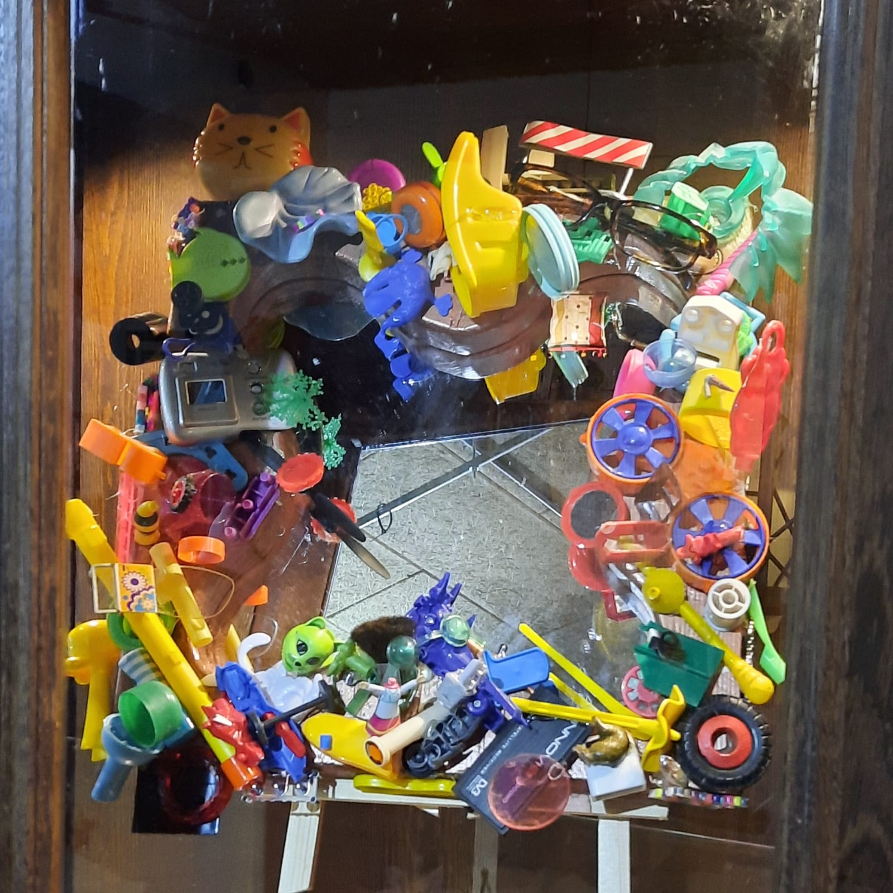

Leer en Creëer
UPB biedt ook praktische vaardigheden voor geïnteresseerden. Onze upcycle- en reparatieworkshops geven mensen de perfecte gelegenheid om te leren, te experimenten en hun creativiteit tot leven te brengen.
Onze workshops bieden hands-ons ervaringen om direct de kans te krijgen om te oefenen. Het brengt ook mensen bij elkaar die dezelfde interesse delen in duurzaamheid en kunst.
Workshopaanbod
Upcycle Basics: Leer de essentiële beginselen van upcyclen en ontdek hoe je alledaagse items kunt omtoveren to unieke stukken.
Kledingreparatie: Ontdek hoe je eenvoudige reparaties aan kleding kunt uitvoeren, zoals naaien, zomen en het vervangen van knopen.
Meubelherstel: Leer hoe je oude meubelstukken nieuw leven kunt inblazen door schuren, verven en restaureren.
DIY Decoratie: Creëer je eigen decoratieve items voor je huis door het recyclen van materialen en het toepassen van creatieve technieken
Upcyclen voor Kinderen: Betrek kinderen bij duurzaamheid en creativiteit door hen te leren hoe ze hun speelgoed en kleding kunnen upcyclen.
Hoe neem je deel?
Bekijk ons workshopschema en kies de workshops die het beste bij je passen. Onze workshops zijn geschikt voor alle leeftijden en vaardigheids niveau. Voor vragen over onze workshops of om je aan te melden, neem gerust contact met ons op.